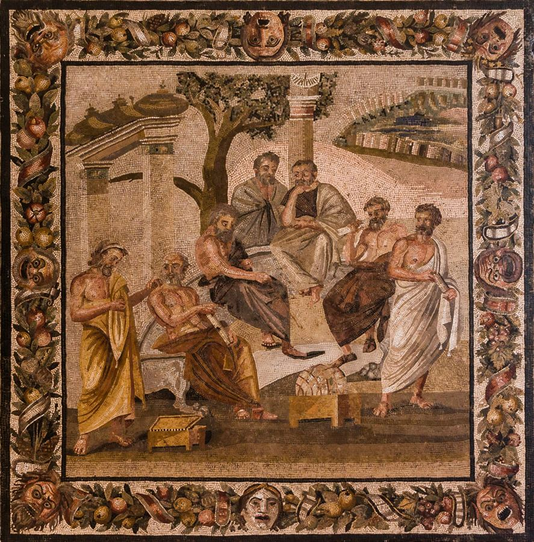

τί ἐστι;Plato's Academy, mosaic from Pompeii
One method, one disavowal, and the debt that only the Forms can settle
Not was there a historical Socrates, but: how does the conceptual pressure that produces the Forms become visible in the dialogues?
The answer the scholars here converge on: the elenchus creates a debt it cannot pay. It refutes without establishing; it presupposes a distinction between knowledge and opinion it cannot ground; it relies on the interlocutor already possessing something — true belief, or knowledge — that it cannot explain. The theory of Forms, and the recollection doctrine arriving with it, is what settles that debt.
Vlastos says this himself, in a footnote. See §10: the crucial assumption is "unsupported and unsupportable within the elenctic dialogues" and "must await the metaphysical grounding it will be given by Plato in the Meno."
Everything after that footnote is a fight over whether he is right. Irwin says nothing new happens in the Meno. Nozick says the debt is even larger than Vlastos admits. Fine says Plato never contracted it in the first place.
If you want the machinery rather than the story. The claim that carries this whole document is that the elenchus proves more than its form allows. §24 is the reference section that shows the form: what p, q, r, s, t stand for, whether the premises are derived from one another, why an inconsistent set blames no member in particular, and which dialogue passages show the repair running one way rather than the other — answered as five questions, with every passage in Stephanus notation.
How to read this. Immediately below the contents there is an interactive map of the whole argument — open a branch to see what a section contains, and click a §NN chip to jump straight to it. The Prologue is a map of the whole debate, drawn by Fine herself — five candidate solutions and who holds each. Parts One to Four are the evidence, read text by text. The Coda puts the finished argument into a single diagram. If you only have ten minutes, read §02 and then the Coda.
The same twenty-three sections, drawn as a tree. Open a branch to see what is inside it; the §NN chip on a node jumps to that section in the text below.
Start with the terrain rather than the texts. Before any of the five authors below can be placed, you need to know what the disagreement is about — and, more usefully, what the full range of available answers is.
Fine drew that map herself, in the Introduction to the volume in which the Vlastos chapters are reprinted. She states the problem, splits it in two, lists five candidate solutions, attributes each to the scholars who hold it, and says which one she takes. Everything in Parts One to Four is a defence or a demolition of one of those five.
Fine states them as "closely related" but separate Intro pp. 2–3. For the first of the two taken apart step by step — the symbolic form, the asymmetry, and the passages — see §24.
Fine's own enumeration Intro pp. 3–5. Read the centre panel first; the flanking cards are the two philosophers who attack it, and Fine's own verdict on the right.
Irwin and Nozick attack different solutions, from opposite directions. Irwin thinks Socrates has less than Vlastos says; Nozick thinks he needs more than Fine says. They are not allies.
(5) closes the elenchus problem. Nothing on the list closes the disavowal problem — which is why Ap. 29b keeps coming back, and why Irwin spent eighteen years finding a reading of it PE 29.
That is the menu. Everything from Part One onward is the reading that decides between the items on it — and every one of the five options above will reappear below, attached to the scholar who defends it.
Why the choice on the previous page is not academic housekeeping.
One problem, split in two → five solutions on offer → Vlastos takes (4) for the disavowal and (5) for the elenchus → Irwin strikes (4) and keeps (5) → Nozick strikes (5) and demands knowledge → Fine keeps (5), rules it "entirely satisfactory" for the elenchus, and admits Ap. 29b still leaves the disavowal open.
The one thing your sketch got exactly right: everything downstream of the top box is scholars arguing about a menu, not Plato saying anything. That is why the Forms come in as an explanation of the menu, not as a step on it.
Hold that comparison in view. The four parts that follow are, in effect, the case for and against each column — built out of what the five authors actually wrote, page by page.
Before anything can be said about what the elenchus presupposes, someone has to say what it is. Nobody in this document is reading a text in which Plato explains his method, because there is no such text — Plato has no word for the elenchus as a method, and Robinson's opening chapter is a warning about exactly that danger.
So Part One is reconstruction. Robinson builds the account in 1941; Vlastos inherits it in 1983, keeps the canon, and breaks with the logic. What both of them find at the bottom of the method is a failure that is productive — the elenchus tells you that you are wrong without telling you why, and Robinson names that failure the "germ" of the Platonic distinction between knowledge and opinion.
Chapter 1, "Introduction: The Interpretation of Plato," pp. 1–6. Not about Plato's philosophy — it is the rulebook.
| Error | What it is | Page |
|---|---|---|
| Mosaic interpretation | Loading weight on an isolated sentence without asking if it is a passing remark or settled doctrine | p. 1 |
| By abstraction | Author mentions X; X looks like a case of Y; so you say he "was well aware of Y." Example: Plato "discovered the copula" in the Sophist | p. 2 |
| By inference | "Plato says p, p implies q, therefore Plato meant q." Example: Adam reading "mathematicals" into the Republic | pp. 2–3 |
| Insinuating the future | Reading back what only became explicit later. "The oak is in the acorn, no doubt; but we must not leave it at that" | p. 3 |
| Beyond the last word | Ascribing not just every step the author took but the next one, actually taken by a later generation | pp. 3–4 |
He opens by catching two named scholars: Cornford, who said the second part of the Parmenides is "avowedly" an exercise in ambiguities — though the dialogue contains no word for "ambiguity"; and Shorey, who found "express recognition" of extension/intension in a passage that neither names nor describes the distinction p. 1.
Robinson's declared rules p. 5: attribute to Plato no inference he does not make in so many words, and no abstraction he has no name for, without special reason. Behind them an assumption: possessing a single name for an idea is a later stage than being able to express it only in a sentence.
He names the risk himself — "an ungenerous narrowness or blindness to the range of an author's ideas" p. 6 — and credits Julius Stenzel for the ideal.
This is the rule Vlastos opens with. When Vlastos observes that Socrates has no name for his method and never asks "What is elenchus?", he is running Robinson's canon. The two men share the method and disagree about its application.
Chapter 2, "Elenchus," pp. 7–20.
Two senses p. 7: the wider — examining a person about a statement; the narrower — cross-examination or refutation. The pattern: a primary ethical question, a primary answer, then secondary questions whose answers seem inescapable — until Socrates in effect says let us add our admissions together (Prot. 332d), and the sum is the contradictory of the primary answer. So pervasive that "we may almost say that Socrates never talks to anyone without refuting him" p. 7.
| Justifying text | Justification | Page |
|---|---|---|
| Meno 84 | Arouses curiosity. The one who knows he is ignorant is better off — he now has the drive that may lead to knowledge | pp. 11–12 |
| Sophist 229e–230e | Purification. The medical-purging analogy: it removes the conceit of knowing. Explicitly preferred to "admonition" | pp. 12–13 |
| Apology | Moral improvement. The oracle, the gadfly (30e), elenchus as examination of men's lives (39c) | pp. 13–14 |
The chain that makes logic-chopping fit for moral reform: you cannot be virtuous without knowing the definition of virtue; so remove the false conceit of knowing; so apply the elenchus pp. 14–15.
Three conditions: the answerer must believe his own statement, accept the argument's validity, and genuinely accept the premisses (Grg. 471d) p. 15.
The Gorgias contains the root elench- over fifty times in its eighty pages, and opposes Socratic procedure to the lawcourts: there you convince the judges; here you must convince your opponent himself. "The result depends not on a majority of votes, but on the single vote of the answerer" — Grg. 471e–472c, 474a, 475e p. 16.
The objection: the elenchus tells you that you are wrong, not why p. 17. Robinson's reconstructed reply is that the aim was never to swap a false opinion for a true one but to wake men into curiosity. And then:
The conviction of one's own ignorance involves and includes some dim realization of the difference between knowledge and all opinions whether false or true. In other words, the notion of the elenchus contains a germ of the Platonic conception of knowledge as absolutely distinct from opinion. Robinson, p. 18
Your developmental hinge, stated in 1941. To realise you do not know is already to sense that knowledge differs from opinion as such — not merely from false opinion. Made explicit and given objects, that is the middle-period epistemology.
Three things happen in the middle and later dialogues pp. 19–20: it loses its irony (Letter VII 344b requires friendly conduct); it is absorbed into dialectic, "harnessed to the car of construction"; and it gradually ceases to be depicted.
Thus elenchus changes into dialectic, negative into positive, pedagogy into discovery, morality into science. Robinson, p. 20
A visible curve in the text, independent of any historical claim: the method recedes exactly as the metaphysics advances.
Chapter 3, "Direct and Indirect," pp. 21–34.
Indirect refutation: deduce a falsehood from the thesis itself. Direct: reach the contradictory "without at any time or in any way assuming the refutand" p. 24. Every indirect argument is in outline If A then B; but not B; therefore not A p. 25.
The count Vlastos uses: in nine named dialogues, "roughly 39 arguments of which 31 seem to be indirect" p. 25.
Did Plato make these distinctions? No — that would be "a gross case of misinterpretation by abstraction," his own ch. 1 term. The evidence is lexical: Plato has no word for "premise" and no word for "indirect argument" p. 28. So Plato habitually wrote as if the falsehood followed "without the aid of any extra premise," and as if all elenchus consisted in reducing the thesis to a self-contradiction p. 29.
He anticipates Vlastos's objection — that this attributes to Plato "an actual logical error too gross for him to commit" p. 29 — and answers by granting many refutations are direct while insisting Plato regarded them as reductions to contradiction pp. 30–31. Diagnosis: Plato confused the answerer contradicting his former opinion with the theory contradicting itself p. 31.
| Element | Robinson | Vlastos |
|---|---|---|
| The canon | No abstraction the author has no name for p. 5 | Socrates has no name for the method; never asks "What is elenchus?" |
| The witness seam | Lawcourt contrast; Grg. 471e–472c, 474a p. 16 | The same passages become SE T18, T21, T22 — re-read as Socrates claiming to prove |
| "Say what you believe" | The answerer must genuinely accept the premisses p. 15 | A formal constraint documented across four dialogues (SE T8–T11) |
| The count | Roughly 39, of which 31 indirect p. 25 | 39 arguments, not one fits the self-contradiction pattern |
| Definition of the art | "The art of elenchus is to find premises believed by the answerer and yet entailing the contrary of his thesis" | Quoted approvingly in ch. II n. 20 — Vlastos adds only: to "believed" add "and admitted" |
Robinson rules that Socrates' denial that he is conducting an elenchus "is insincere"; from the very first secondary question he "saw and intended" the refutation pp. 8–9. Chapter II is Vlastos's answer — and it is where the developmental chain gets completed.
Where the standard elenchus and assumption (A) are introduced. The argument's symbolic form, and the dialogue passages behind it, are set out question by question in §24.
The method is only half the problem. Socrates says, repeatedly, that he does not know — and yet he argues as though refutation established truth, and he holds moral convictions with what Nozick calls "great confidence." A method that cannot establish, run by a man who says he knows nothing: whatever the elenchus is for, it has to be compatible with that.
Part Two is the four-cornered fight over what the disavowal leaves Socrates holding. Vlastos splits the word "know" in two. Irwin refuses to split it and gives Socrates true belief only. Nozick takes the disclaimer more literally than either and denies Socrates even true belief about definitions. Fine takes all three apart and finds that Nozick's Socrates ends up the richest of the three, not the poorest.
The companion chapter to §09, and the half that completes the chain. Vlastos states his own plan: review the evidence (§I), develop the hypothesis (§II), exhibit its explanatory power (§III), meet objections (§IV).
Two standing answers, and Vlastos argues both are false — possible only because Socrates is "making appropriately variable use of his words for knowing."
| Reading | Advocate | Source |
|---|---|---|
| Insincere. The disclaimer is "an expedient to encourage his interlocutor to seek out the truth" | Norman Gulley | The Philosophy of Socrates (London, 1968), p. 69 |
| Sincere, and total. He renounces knowledge and claims no more than true belief | Terence Irwin | Plato's Moral Theory (Oxford, 1977) — "PMT" — pp. 39–40. Still his view in 1995 — see §13 |
He is scrupulous about Irwin: "My debt to this book is very great. Nothing I have ever read on Socrates' philosophy has done more to sharpen up my own understanding of it" — adding that only those "strangers to the ethos of scholarly controversy" will read his critique as anything but esteem.
Webster's: "A pretence of ignorance… called also 'Socratic irony'." OED: "Dissimulation, pretence; especially [of] ignorance feigned by Socrates…"
The dictionaries — showing how deep the reading runs
"Pretence" is the key word. On this reading Socrates knows, and pretends not to.
Vlastos's counter-evidence is a survey of who actually says Socrates feigns:
| Text | Source | What it shows |
|---|---|---|
| T3 | Aristotle, Soph. El. 183b6–8 | Reports the disclaimer — but the wording (past imperfect: "he used to confess") suggests he did not think it a pretence; Aristotle has a verb for "feigned" and does not use it |
| T4 | Aeschines Socraticus, Alcibiades, frag. 10C Dittmar | A contemporary writer of Socratic dialogues has Socrates disclaim teaching-knowledge in earnest |
| T5 | Rep. 1, 337a3–7 | Thrasymachus is the only character in Plato who says Socrates feigns — and he says it while giving a sardonic horselaugh |
1 · The rule. How could Socrates dissemble when his own first rule of elenctic dialogue is "say what you believe"? Vlastos cites Cri. 40c–d; Prt. 331c; Rep. 337c, 346a, 350a; Grg. 495a, 500b. And why keep up a pretence at moments when it cannot serve to put the interlocutor in the answerer's role — as at T6 (Grg. 509a4–6), where he disclaims knowledge after declaring his theses "bound and clamped down by arguments of iron and adamant"?
2 · The soliloquy. The strongest evidence is the Apology. In T7 (21b2–5) Socrates reports thinking to himself, on hearing the oracle, that he is "aware of being wise in nothing." In T8 (21d2–6) he narrates reasoning to himself that he is wiser only because he does not think he knows.
If fiction, Socrates is lying to the judges, to whom he had promised, just a moment earlier (20d): 'Now I shall tell you the whole truth.' If fact… then Socrates would have had to believe that he had performed an unperformable speech-act, namely, that he had knowingly dissembled to himself. Vlastos, ch. II §I
First the framing: if Socrates only ever wanted true belief, why does he spend his life searching for knowledge? T9 (Grg. 505e4–5) and T10 (Grg. 472c6–d1) — "to know or not to know who is happy and who is not."
And a life-shaped argument: he holds that virtue is knowledge. If after decades he still had none, "his life is a disaster… he has missed out on virtue and, therewith, on happiness." Yet he is serenely confident of both. Vlastos notes the asymmetry: Socrates' epistemic self-doubt is never paralleled by any admission of moral failure.
| Text | Passage | How the claim is made |
|---|---|---|
| T11 | Ap. 29b6–7 | Openly. "this I know to be evil and base." The one flat avowal — which Irwin dismisses only on the ground that it is exceptional PMT 58 |
| T12 | Grg. 486e5–6 | Programmatically. "I know well that if you will agree with me on those things which my soul believes, those things will be the very truth" |
| T13 | Prt. 357d7–e1 | By implication. Telling the multitude "you yourselves know" implies he knows — else he'd have no reason to say it |
| T14 · T15 | Rep. 350c10–11; 351a5–6 | By implication. A Stephanus page after the conclusion, with no new argument: "no one could still not know this" |
| T16 | Grg. 512b1–2 | By proxy. The sea-captain parable — the captain "knows" that for a wicked man it is better not to live. But the captain "is Socrates' creature" |
| T17 | Cri. 48a5–7 | By proxy. "the man who knows" — a construct of the argument. Imputing knowledge to him would be "a fraud" unless Socrates had it |
The methodological charge: Irwin's conclusion is reasonable from the texts he cites, but "that textual base is incomplete." Vlastos notes that none of T11–T17 appear in PMT's index locorum, which he calls otherwise commendably full.
Vlastos motivates it with a modern analogy. Ordinarily he would say he knows heavy smoking causes cancer. Challenged — "but do you know it?" — he would defer to a research physiologist and say he doesn't. No contradiction, and no retraction: his reasons were imperfect but good enough to act on.
| knowledgeC | knowledgeE | |
|---|---|---|
| What it is | Certainty. Infallible — the standard philosophers used before and long after | Elenctic knowledge. Fallibly justified true belief, reached and tested by the elenchus |
| Socrates' stance | Disclaims it — habitually, sincerely | Claims it — rarely, but unmistakably |
The philology that secures knowledgeC. T18 (Rep. 477e) has Glaucon say no sensible man would identify the infallible with the fallible. But the Greek word could mean "inerrant" (not in error) or "inerrable" (cannot err). Vlastos shows Plato uses it both ways — and argues it must be the strong sense here, because Plato is distinguishing knowledge from belief as such, and a true belief is no less inerrant than knowledge.
He then shows this was the consensus of the age, not an eccentricity: Aristotle at T21 (APo. 71b), T22 (APo. 72b — knowledge is "immovable by persuasion"), T24 (EN 1139b19–21 — "We all believe that what we know could not be otherwise"), and Plato at T23 (Ti. 51e4). He adds the tell: Plato has Glaucon state the criterion and Socrates accept it unquestioned — the mode of presentation of something taken as agreed.
What can Socrates offer for any thesis P? Only that it is elenctically viable:
Q(a) — P is entailed by beliefs held by anyone who denies it.
Q(b) — not-P is not entailed by beliefs held by Socrates who affirms it.
Three failures of security, stated by Vlastos himself: (i) even if Q(a) held, it would show only that his opponents happen to have such beliefs — "it could not begin to show that those beliefs are true"; (ii) the evidence for Q(a) is his own experience, and a thousand successes might be followed by a failure; (iii) "Elenchus is not a computer… It is a human process, a contest" — so winning may only show he is the better debater, not that his own beliefs are consistent.
In this footnote he does three things at once.
1 · He scales down assumption (A). Q(a) is the weakened version; the full-strength version is Q(A) = assumption (A) from 'SE'. He also restates (B): "The set of moral beliefs held by Socrates at any given time is consistent."
2 · He credits the critics who forced the change: Thomas Brickhouse and Nicholas Smith, whose paper he heard in his Berkeley seminar in summer 1983, published as 'Vlastos on the Elenchus,' Oxford Studies in Ancient Philosophy 2 (1984), 185–95.
3 · And then the sentence your whole question turns on:
Q(A), thus unsupported and unsupportable within the elenctic dialogues, must await the metaphysical grounding it will be given by Plato in the Meno: transmigration and the theory of recollection ensure that true beliefs entailing the negation of every false belief are innate in the soul. Vlastos, ch. II, n. 44
That is the elenchus handing its unpayable debt to metaphysics, in Vlastos's own words.
T28 (Grg. 508e6–509a5) is one passage in two parts: (a) his doctrines are "clamped down and bound by arguments of iron and adamant"; (b) "I do not know how these things are." With T29 (Grg. 479e8) — "Has it not been proved… true?" — the tension looks fatal.
On the hypothesis it vanishes: he implies knowledgeE and denies knowledgeC. And T30 (Grg. 505e4–506a4) puts both uses inside a single paragraph — we should be eager to knowE what is true; but "I do not assert what I assert as one who knowsC."
Why say it precisely when he has won? Because spectators of his victories "think him wiseC" (Ap. 23a3–4). Disclaiming certainty at the moment of triumph is how he keeps the invitation to refute him sincere.
Peter Geach, in 'Plato's Euthyphro: An Analysis and Commentary', Monist 50 (1966), 369–82 — a paper Vlastos calls "powerfully and fruitfully provocative" — extracted:
(A) If one does not know what the F is, one cannot know anything whatever about F. (B) It is therefore useless to seek the F by investigating examples.
Irwin's escape is what Vlastos labels STB — "sufficiency of true belief" — also accepted independently by Burnyeat, Santas (Socrates, London 1979) and Woodruff (Plato: Hippias Major, Indianapolis 1982, p. 140).
Vlastos's two-part answer. First, disambiguate: read with knowledgeC throughout, (A) is vacuous; read with knowledgeE, it is false. Second — and this is the textual bombshell — (A) is never asserted in the elenctic dialogues at all. It appears only in the transitional Lysis and Hippias Major. The passages usually cited for it (Chrm. 176a, La. 189e–190b) lack the required generality; and Euthphr. 6e states a different proposition — which, following Santas (Socrates, 116–17), makes definitional knowledge a sufficient condition, not a necessary one.
T31 (Hp.Ma. 304d5–e3) is the text STB cannot absorb: part (a) instantiates (A), but part (b) asks whether in that condition one is "better off alive than dead" — despair no mere lack of definitions could explain if true belief really sufficed.
The answer comes from the oracle story itself. T32 (Ap. 20d6–e1): he has "human wisdom," while others are wise "in a wisdom that is more than human." T33 (Ap. 23a–b4): "human wisdom is worth little or nothing."
So the two-senses hypothesis is stated by Socrates in so many words. And the resolution: measured against the god's standards his insight ranks low, yet it earns praise because it is humble. He knowsE that he has no knowledgeC.
Vlastos answers with Greek linguistic practice: in Heraclitus, Sophocles and Euripides, ambiguous utterance is a favoured form of pregnant speech. His example is a Euripidean line meaning literally "Wisdom is not wisdom" — a flat self-contradiction at which translators balk and quietly repair (he names Gilbert Murray and Dodds). The poet throws the burden of disambiguation on the audience, and the paradox is the point.
Then the definition that has become standard:
In Socrates' most powerful uses of it the irony is more complex: in these Socratic sayings what is said both is and isn't what is meant. Vlastos, ch. II §IV
The same holds of Socratic teaching: "He teaches saying he is not teaching" — true if teaching is imparting truth already known, false if it is triggering an autonomous learning process.
And he rejects Kierkegaard by name. The purpose is not to "deceive [the learner] into the truth" but "to tease, mock, perplex him into seeking the truth." That is the difference between irony and dissembling — and the exact point where he parts from Robinson.
With sources, so you can follow any thread out.
| Name | Source | Vlastos's treatment |
|---|---|---|
| Norman Gulley | The Philosophy of Socrates (London, 1968), pp. 62, 69 | Refuted — the insincerity reading. Also credited for a correct observation about Aristotle |
| Terence Irwin | Plato's Moral Theory (Oxford, 1977) — pp. 37–41, 58, 294, 401; also Plato: Gorgias (Oxford, 1979) | Refuted, with unusual warmth — incomplete textual base, T11–T17 absent from the index locorum, and a conflation of knowledge with certainty. Irwin replies in 1995 and does not concede: §13 |
| Richard Robinson | Plato's Earlier Dialectic (Oxford, 1953), p. 15 | Quoted approvingly on the art of elenchus — Vlastos adds only "and admitted" to "believed" |
| Peter Geach | 'Plato's Euthyphro', Monist 50 (1966), 369–82; repr. Logic Matters | Source of the problem — (A) and (B), "powerfully and fruitfully provocative" |
| Gerasimos Santas | Socrates (London, 1979), 116–17, 119 ff., 311 n. 26 | Both — criticised for conceding Irwin's view in passing, but followed on the necessary/sufficient distinction at Euthphr. 6e |
| M. F. Burnyeat | 'Examples in Epistemology', Philosophy 52 (1977), 384 ff.; 'Aristotle on Understanding Knowledge' (1981), 111 | Both — his concession to Irwin is noted as unargued, but he is quoted with approval on Aristotle |
| Paul Woodruff | Plato: The Hippias Major (Indianapolis, 1982), p. 140 | Listed among those accepting STB |
| E. R. Dodds | Plato's Gorgias (Oxford, 1959), p. 541 | Criticised — the "complicated exegetical manoeuvre" Gulley borrows; Vlastos's retort in 'Afterthoughts on the Socratic Elenchus', OSAP 1 (1983), 71 |
| Eduard Zeller | Sokrates und die Sokratiker, Eng. trans., p. 124 | Sharply criticised — glossing "Socrates really knew nothing" as "had no developed theory" blunts the texts "past all recognition" |
| W. K. C. Guthrie | A History of Greek Philosophy, iii (Cambridge, 1969), 422 ff. | Cited as a sample of the same "emasculations" of the avowal of ignorance |
| Brickhouse & Smith | 'Vlastos on the Elenchus', OSAP 2 (1984), 185–95 | Credited — their criticism made him scale (A) down to Q(a) |
| Robert Nozick | 'Knowledge', Philosophical Explanations (Oxford, 1982) | Offered as an alternative he would welcome if a case could be made |
| Kierkegaard | quoted via Walter Lowrie, Kierkegaard (Princeton, 1938), 248 | Rejected — irony's purpose is not to "deceive into the truth" |
| Translators | Cornford, Lindsay, Robin vs. Bloom, Grube, Shorey | The first three render eirōneia correctly as dissembling; the others mistranslate it "irony," missing that deception is built into one and not the other. Robin also over-translates Grg. 509a5 |
| Vlastos himself | Introduction to Plato's Protagoras (New York, 1956), p. xxxi | Refuted — he had conflated renouncing certainty (true) with renouncing knowledge (false); "Gulley fell into the same trap" |
Read the columns downward. The disagreement is not about whether Socrates is sincere — all four say he is.
| On Socrates' own epistemic state | Vlastos | Irwin | Nozick | Fine's verdict |
|---|---|---|---|---|
| How many senses of "know"? | Two. KE (elenctic) and KC (certainty) PQ 1985 | One. No hidden second sense PMT 39–42 | One. He does not use the two-senses move | Nozick "presents his answer as an alternative to theirs" but ends up nearer them than he thinks Fine 233 |
| Does Socrates claim any knowledge? | Yes — quite a lot of KE | No — none, in any sense | Yes — of the Socratic doctrines, though not of "What is F?" Noz. 144 | "despite Nozick's claim to differ from Vlastos, they agree that Socrates claims to have some knowledge" Fine 236 |
| Does he claim true belief about definitions? | Not addressed explicitly Fine 237 n. 11 | Yes — some conditions, some content PMT 293 n. 2; PE 22–5 | No — "he doesn't even have true belief" Noz. 145 | But at Noz. 147 he writes "completely adequate," which lets some true belief back in — "This, we have seen, is Irwin's view" Fine 237 |
| The scope problem (Meno 71b: no knowledge of F's properties without knowing what F is) | Solved by denying the early dialogues accept the Meno-principle PQ 25–6 | Accepts the priority of definition — that is why the disavowal is global PE 28 | Not mentioned — "Nozick does not mention this difficulty for his view, let alone suggest an answer to it" Fine 238 | Fine flags Benson, OSAP 8 (1990) 19–65 for the view that the early dialogues are committed to it Fine 238 n. 14 |
Fine's n. 6 Fine 234–235 traces Irwin across three stages, and it independently confirms the 1977→1995 reading: PMT p. 58 says Socrates affirms moral knowledge "once, but only once" (Ap. 29b6–7) and offers no reconciliation; 'Socratic Inquiry and Politics', Ethics 96 (1986), p. 408 adds two further exceptions (Grg. 511e8, 521b5–6) and admits he has "no solution to offer"; PE pp. 28–9 finally supplies one — the "human wisdom" reading, on which "'human' cancel[s] the suggestion that this is genuine wisdom (just as fake diamonds are not real diamonds)." Fine's conclusion: "Hence PE denies that there are any avowals of knowledge."
Vlastos's ch. II was published in 1985. Irwin's next full statement came ten years later. Did he move?
The position did not change. The defence did — completely. In 1995 Irwin still holds that Socrates' disavowal of knowledge is sincere and unrestricted, that Socrates has true belief and not knowledge, and that the elenchus is nevertheless constructive. What is new is that he now gives the disavowal a reason — the priority of definition — instead of leaving it as a bare "strict condition"; and he now defends the position at exactly the three points where Vlastos attacked it, without ever naming the attack in the text.
| Point at issue | PMT 1977 | Plato's Ethics 1995 | Moved? |
|---|---|---|---|
| Is the disavowal sincere and total? | "a disclaimer of knowledge does not require a disclaimer of all positive convictions" PMT 40 | "he cannot consistently mean to disavow all reasonable positive convictions about morality" PE 28; and "This global disavowal of knowledge is quite reasonable in the light of Socrates' view that knowledge requires Socratic definition" PE 29 | No — hardened. The word "global" is new, and n. 35 says his conclusion here agrees with Vlastos [1991] 238 PE 359 n. 35 |
| Does Socrates distinguish knowledge from true belief? | "Socrates does not explicitly distinguish knowledge from true belief; but his test for knowledge would make it reasonable for him to recognize true belief without knowledge" PMT 40 | "Aristotle, following Plato, distinguishes knowledge from mere belief; it is reasonable to attribute a similar distinction to Socrates, since he does not say that a definition is necessary for any true belief about the virtues, but does imply that it is necessary for knowledge about them" PE 29 | Same claim, stronger footing. 1977 conceded Socrates never draws it; 1995 argues it can be attributed to him on Aristotelian grounds |
| What about Ap. 29b6–7 — Vlastos's T11, the flat avowal of knowledge? | Conceded as an anomaly: "quite exceptionally, he claims to know this (Ap. 29b6–7)" PMT 58 | A whole new section, §17 "Difficulties about Socratic Ignorance," is built around it. Three options are listed — "Either he does not accept the priority of definition, or he is inconsistent, or this remark does not really state a claim to knowledge" — and Irwin takes the third: it expresses "human wisdom" (Ap. 20d5–9, 23a5–b7), i.e. "a moral conviction accompanied by his further rationally warranted conviction that the moral conviction does not really count as moral knowledge" PE 29 | Changed — this is the real move. The 1977 "exception" that Vlastos pounced on is withdrawn and replaced by a deflationary reading |
| Is elenctically-held true belief too insecure to act on? (Vlastos's "trebly insecure") | "Socrates, then, has some reason for confidence in his beliefs, even though he cannot find the account of justice or the good which would justify them" PMT 40 | "his disavowal of knowledge does not imply that his convictions are subjectively uncertain or practically unreliable… they are stable and based on some rational defence (Cri. 46b4–c6). He therefore has some basis for confidence in his beliefs, even though he does not know that they are true" PE 30 | No — the same sentence, rewritten. Compare the two cells: this is the clearest proof that the 1995 book is PMT's position restated, not revised |
1977 said only that "Socrates observes strict conditions for knowledge" PMT 40. 1995 makes the condition do argumentative work. Irwin extracts two assumptions from the practice of the elenchus: "(1) that knowledge of what bravery (for example) is requires a definition of bravery, and (2) that knowledge that something is brave requires knowledge of what bravery is" PE 28, supporting them from Eu. 5c4–d5, 6d9–e6; La. 189e3–190c6; Lys. 211e8–212a7, 223b4–8, and from Aristotle at Met. 1078b23–30. The disavowal is then a consequence: Socrates has no definitions, so by his own rule he has no knowledge. That is why the disavowal can be global without being sceptical.
Irwin argues Socrates seeks real, not nominal, definitions — "not the 'nominal essence' grasped by the competent speaker and hearer, but the 'real essence' they are referring to" PE 27, on the model of gold vs. fool's gold, with Locke, Essay III 3.13–17 in the note PE 358 n. 30. The textual anchors are Eu. 6d10 ("that very form by which all the piouses are pious"), Eu. 5d1, La. 191e9–192b8. This is the load-bearing move for your question: if Socrates is already after real essences in the early dialogues, the middle-period Forms are the completion of a project already under way, not a new one.
Vlastos charged that Socrates' confidence needs an unargued assumption about what interlocutors already believe. Irwin's answer is to enumerate it — five "guiding principles of the elenchos, not simply Socrates' own beliefs" PE 49–50: (1) there is a single informative answer to "What is F?"; (2) the interlocutor has fairly reliable views about examples; (3) a virtue is a state of the agent, not a behaviour pattern; (4) virtuous action is always fine, good and beneficial; (5) when (2) and (4) conflict, (4) overrides (2) — citing La. 197a1–c9 and Ch. 175e5–176a1. He also states the residual problem honestly, in five open questions PE 30–31, the first of which is the 1977 "consistently crazy" worry restated: "the result of adjusting false beliefs to the guiding principles may simply be a more consistent set of false beliefs."
Almost every decisive text in Vlastos's case comes from the Gorgias. In 1995 Irwin brackets it deliberately — "I will try to present the Socratic view without reference to the Protagoras or the Gorgias… it is sometimes believed that the Gorgias advances positive claims about the elenchos that mark an essential difference from the shorter dialogues. I do not believe there is any essential difference" PE 19 — and then returns to it 90 pages later. On G. 508e6–509b1 (Vlastos's key text) he writes: "In this deliberate juxtaposition of his confident conclusion with his disavowal of knowledge, Socrates implies that his frequent disavowal of knowledge is not a disavowal of positive convictions" PE 123. And on G. 474a5–6 — Vlastos's T22 — he denies it claims any special skill: "He must mean that his moral position will convince any rational interlocutor who examines it on its merits" PE 124.
"Vlastos [1985] suggests that Socrates uses know in two senses. Against this suggestion, see Irwin [1992a]."
Plato's Ethics, ch. 2 n. 36 PE 359. Irwin [1992a] = 'Socratic puzzles', OSAP 10 (1992), 241–66 PE 399.
This is the whole answer, in one sentence. Vlastos's entire solution — knowledgeC vs. knowledgeE, the architecture that §20 of this document is built on — is rejected in a footnote with a pointer elsewhere. Irwin does not need two senses of "know" because on his account there is only one sense and only one thing Socrates lacks: a definition.
"This point about the scope of Socrates' disavowal of knowledge is emphasized by Vlastos [1991], 238, against the solutions offered by Lesher [1987] and Woodruff [1990]. It also raises difficulties for the view defended by Reeve [1989], 32–53."
Plato's Ethics, ch. 2 n. 35 PE 359, attached to the sentence about the "global disavowal."
Note what this means: on the scope of the disavowal Irwin now cites Vlastos in his own support. The two agree that Socrates disclaims knowledge across the board. They disagree only about what he keeps.
"An 'external' account of Plato's criticisms of Socrates is presented by Vlastos [1991], chap. 4. He claims that Plato's interest in mathematics swept him 'away from his Socratic moorings' towards 'the "Socrates" of his middle period, pursuing unSocratic projects to antiSocratic conclusions' (131)… Vlastos' view is criticized well by Gentzler [1991a], chap. 4."
Plato's Ethics, ch. 9 n. 44 PE 374–375.
The sharpest disagreement, and the one that matters most for this document. Vlastos's ch. II n. 65 — quoted in link 10 of §20 below — makes Plato's mathematics the cause of the elenchus's abandonment. Irwin calls that an external account and rejects it. On his view nothing swept Plato anywhere; the demands were internal to Socratic practice from the start.
Vlastos (ch. II n. 44): assumption (A) is "unsupported and unsupportable within the elenctic dialogues" and "must await the metaphysical grounding it will be given by Plato in the Meno." The Meno supplies something the early dialogues lacked and could not have had.
Irwin (PE §100): "Since the Meno presents an explicit account of knowledge that is absent from the early dialogues, it gives a clear formulation and defence of claims that are implicit and undefended in the early dialogues; it does not introduce a new epistemological demand that was absent from earlier dialogues" PE 143. He adds that the explicit distinction "explains what is said and done in earlier dialogues," and that "when Socrates claims that he and other people are ignorant about the virtues, he claims that they lack the 'why', the explanation that would transform their beliefs into knowledge" PE 142–143.
Same passage, same direction of travel, opposite verdict on whether anything new happens. On Vlastos the Meno is a rescue; on Irwin it is a write-up. Both agree the Meno is where the elenchus hands over.
Your aim is to see the conceptual development of the Forms as it is visible in the dialogues. §20 below gives you the discontinuity version — a debt the elenchus cannot pay, settled by recollection and the Forms. Irwin gives you the continuity version: real definitions are what Socrates was after all along PE 27, 50, explanation is what he found himself unable to give PE 142–143, and the Meno merely names the gap. Notice that both stories run through the same three places — the demand for a definition, the instability of belief, and the Meno's aitias logismos. That convergence is itself evidence: whatever you decide about who is right, the textual pressure point is not in dispute.
"I began this book intending it to be a second edition of Plato's Moral Theory. The Press agreed to a moderate increase in the length of the earlier book, in the hope that a new edition would (1) offer a less one-sided presentation of some controversial issues than I gave in the earlier book; (2) expound the main issues less cryptically…; (3) include some discussion of the later dialogues; and (4) take account of what has been written on this topic since the publication of the earlier book." Irwin, Plato's Ethics, Preface PE viii
"Since the book is meant to be accessible to people who are beginning to think seriously about Plato's ethics, I have not emphasized the differences between it and PMT. After writing an appendix describing the main objections raised against PMT, and the ways I now want to accept or answer these objections, I decided not to include the appendix in this book, since it would probably be more interesting to me than to most of my readers… I am sure that the present book has been improved by the criticisms of PMT, whether or not I have accepted them." Irwin, Plato's Ethics, Preface PE x
He also names Vlastos among those he has learnt most from PE x, and records that Vlastos supervised his dissertation on Plato's ethics in 1971–72 PE xi. So the reply is real but deliberately unmarked: the appendix answering Vlastos was written and then withheld. What survives of it is the four notes above and the restructured argument of ch. 2.
The reply is not symmetrical. Vlastos's charge against PMT had two parts: (i) the textual base is incomplete — T11–T17 never appear in PMT's index locorum; and (ii) the STB escape conflates knowledge with certainty. 1995 answers (i) directly and well — Ap. 29b6–7 gets a full section PE 29, Cri. 48a and the Gorgias texts are treated PE 30, 123–124. It answers (ii) only by referring you to a separate paper (Irwin [1992a]). If you want Irwin's full reply to Vlastos on the sense of "know," Plato's Ethics is not where it is; 'Socratic puzzles' is.
Section 1 of his paper, pp. 143–147. The thesis is one sentence long; the argument for it is an analogy.
"Socrates does not (generally) deny knowledge of the Socratic doctrines (it is better to suffer injustice than to do it, etc.) but of the answers to the 'What is F?' questions he pursues with others… Not knowing these things is compatible with his knowing other things" Noz. 144. His superior wisdom "resides in his knowing that he doesn't know, and cannot produce, the correct answer to these 'What is F?' questions" — and there is no self-contradiction, because that piece of knowledge "is not itself the answer to one of his 'What is F?' questions."
Nozick's opening move is a point about conversational implicature, not about texts. Hearers "would have taken him to mean that he doesn't have the truth, whereas Irwin and Vlastos interpret him as saying that he doesn't know the truth. Their interpretations might rescue the literal truth of Socrates' denial but they leave him generating misleading implicatures" Noz. 145.
"I suggest that when Socrates says he himself doesn't know the answers to these questions, he means not just that he doesn't know the truth but that he doesn't have the truth; he doesn't even have true belief." Nozick, "Socratic Puzzles" p. 145 — the paper's central claim
Nozick runs the post-Gettier history against itself Noz. 146: knowledge is not true belief (Theaetetus); not justified true belief (Gettier); not truth-caused belief (the man in the tank); is it truth-tracking? — "I said yes in Philosophical Explanations, but others have raised objections." So "a reasonable philosopher today might say that… he just does not know" what knowledge is. And crucially, he means something specific by that: not that he has an account he believes but is not certain of, but "that there are not conditions he is prepared to put forth, not conditions he believes will not succumb to further counterexamples."
Yet this philosopher still knows a great deal: he knows knowledge is not justified true belief, and his best account "while itself false and inadequate, is more adequate, is closer to the truth… than the earlier accounts" Noz. 147. That is Nozick's Socrates. "Hence, Socrates was not being ironic when he denied knowing the answers. He did not know. And he knew he did not."
Nozick quotes Vlastos on Euthyphro — that Socrates reached a revolutionary conception of piety even though "it is by no means clear that Socrates himself would have been able" to devise "an elenctically foolproof definition" Vlastos 1991, 175–176, at Noz. 146. Nozick takes the concession and generalises it: the gap between an insight and a definition is exactly the gap the reasonable epistemologist lives in.
Sections 1–2 of her paper, pp. 233–238. Her method is diagnostic: she separates what Nozick advertises from what he can actually hold.
"so far from Socrates' thinking he has one kind of knowledge (if not another), or knowledge of some things (but not of others), or true beliefs (if not knowledge), he actually denies that he has any true (moral) beliefs. Rather, he takes his (moral) beliefs to be false, though closer to the truth than are the beliefs of his interlocutors" Fine 235. "This would be a radical, and provocative, view."
Her footnote 7 points where it would land: alongside the ancient sceptical Socrates (Annas, "Plato the Sceptic," OSAP suppl. 1992, 43–72) — the very reading Irwin canvasses and rejects at PE p. 18 (Cicero, Ac. 1.16). "However, (N1) is not Nozick's view."
Nozick's denial "is restricted to definitions" Fine 235–236, while p. 144 gives Socrates knowledge of the doctrines. So: "(N2) is in fact a version of (2) above" — that is, a version of Vlastos's second explanation. "So despite Nozick's claim to differ from Vlastos, they agree that Socrates claims to have some knowledge" Fine 236.
Because at Noz. 147 he writes that Socrates "didn't have a completely adequate true belief" — the emphasis is Fine's — some true belief survives. So Nozick "seems to favor (N3)":
| Clause | Content (Fine 237) | Aligns with |
|---|---|---|
| (i) | Socrates thinks he has some moral knowledge | Vlastos — against Irwin |
| (ii) | He doesn't think he knows the answers to "What is F?" | Both |
| (iii) | Nor does he think he has true beliefs about the complete content, or the complete set of necessary and sufficient conditions | Irwin |
| (iv) | But he has some true beliefs about some conditions and some content | Irwin |
Nozick's opening objection was that Vlastos and Irwin leave Socrates "generating misleading implicatures." Fine: on N2 or N3 "Socrates takes himself to have some true beliefs, in which case he does have the truth (or takes himself to have it, in part). Hence… Nozick's Socrates is just as misleading as Nozick takes Vlastos' and Irwin's Socrates to be" Fine 237–238.
And she is not neutral about who is actually misleading: "I do think that Vlastos' Socrates is misleading, as Vlastos may agree: at least, he says that Socrates' disavowal is a 'front' (p. 22), pronounced 'almost furtively' (p. 23). But I don't think Irwin's Socrates is misleading. Irwin's Socrates simply denies that he has any knowledge whatsoever. Since knowledge is not true belief, denying knowledge is perfectly straightforward" Fine 238 n. 13.
Worth extracting because it is her own view, not a report of anyone's: "I myself do not think that Socrates ever takes knowledge to be 'merely justifiable true belief', nor do I think that anyone ought to accept that as an account of knowledge; for it collapses the distinction between knowledge and true belief. (At least, this is so on the reasonable assumption that every true belief is justifiable)" Fine 234 n. 4. That is the objection to KE in one line — and it is why she does not need Vlastos's two tiers.
Parts One and Two were about what the elenchus does and what its practitioner claims. Part Three asks the harder question, and it is the question that forces the metaphysics: what must already be true of a person before refutation can move them towards the truth rather than away from it?
Vlastos saw the problem and answered it with an assumption about true belief that he admitted he could not support. Nozick, arriving from analytic epistemology with no stake in Plato scholarship, says the assumption is too weak — nothing keeps a mere belief in place under pressure — and raises the requirement to knowledge. Fine replies that the requirement can stay at true belief if the stock of beliefs is structured, and that Plato says so twice in the Meno.
Section 2, pp. 147–151. This is the part that matters most for Part Four, and the part Fine spends most of her reply on.
"An inconsistency reveals that we must have some false belief, but we do have many false beliefs anyway — few of us believe all of our beliefs are true — so why is inconsistency especially bad?" Noz. 147. His answer: about evaluative concepts, error "either… itself constitutes a defect in the state of one's soul, or… easily can lead to one."
He adds a defence of the search for definitions that Irwin would recognise: an explicit standard "can prevent being thrown into confusion by arguments that seem to show that F is impossible" — his example is the sceptic's tank argument — so that "explicit understanding of what constitutes knowledge (or F) makes your beliefs about knowledge (or F) more stable" Noz. 148. Stability is already doing the work here, before the formal argument begins.
Nozick's own footnote 15 explains them: "Vlastos's assumption speaks only of belief, the second one speaks also of knowledge, and the third one speaks of how inconsistencies are resolved" Noz. 150 n. 15. (Vlastos labels the first one (A) in "The Socratic Elenchus"; Nozick relabels it (B), and Fine follows Nozick.)
"When an inconsistency is discovered among a person's beliefs p and q, he can remove that inconsistency by denying the true one p or by denying the false one q. What stops him from denying the true statement p? If the belief that p and the belief that q are each merely beliefs, they seem on a par. What, then, prevents elenchus from leading him further from the truth?" Noz. 149
He credits Vlastos with naming this "the puzzle of the elenchus" (Socrates, p. 15) but adds that "in stating only (B) he does not reach all the way to an answer" Noz. 149 n. 13.
On the tracking analysis, knowing that p requires (4) that if p were true, the person would believe it. So "the belief that p is stable under small enough perturbations… These include the worlds where p comes into conflict with a false belief in q; even there the person believes that p" Noz. 150. Hence "In this elenctic competition, knowledge is more fit than false belief, and so tends to be selected for." He is careful: "I do not want to insist that this particular tracking condition is a part of the (correct) analysis of knowledge" — any condition delivering the extra stability would serve.
"Elenchus is an effective route to reaching such evaluative truths, on this account, only for persons who satisfy conditions (K) and (R), that is, only for people who already do have some knowledge about these evaluative matters. So elenchus (if it is reliably effective) cannot be the only route to knowledge about these matters" Noz. 151.
And on why the same method never reaches a definition, he offers a deflationary answer plus a jab: perhaps definitions are simply reachable only after a number of steps "so large… that no one has yet reached that resultant stage." "Analytic philosophers should not tax Socrates with these questions when they themselves lack a satisfactory explanation for why their own stock of correct analyses is so meager" Noz. 151.
Section 3, pp. 238–244. Three objections, of ascending force.
Her worked example, from Laches 192c–d Fine 240. Three beliefs: (1) endurance is courage — a proposed definition, and false; (2) courage is kalon — a principle, true; (3) endurance is sometimes not kalon — a counter-example, true. Nozick is right that the mere truth of (2) and (3) won't make you keep them. But add a fourth belief — "that when beliefs about definitions, principles, and proposed counter-examples conflict, I should favor beliefs about principles and counter-examples" — and the definition goes.
"Nozick's claim that we need to posit not just true beliefs but also tendencies to favor them over falsehoods thus seems right if we restrict beliefs to first order beliefs. But his claim is less clearly right if the relevant stock of true beliefs is large enough… If (B) includes such beliefs, then I am not sure that Nozick has shown it fails."
Fine's n. 19 Fine 240: "Irwin, PE, pp. 48–50, discusses the 'guiding principles' of the elenchus; these include priority rankings among various sorts of beliefs. However, he does not bring this to bear on the question of whether tendencies as well as true beliefs are needed in order to make progress in the elenchus."
Those are Irwin's five guiding principles — set out at §13 above — the ones where principle (5) says that when the "always fine and beneficial" principle conflicts with a judgment about examples, the principle overrides the example (La. 197a1–c9; Ch. 175e5–176a1). Fine is pointing out that Irwin has already written down exactly the higher-order machinery that answers Nozick — and never noticed. If you want one place where all four of these authors are doing the same work, this is it.
At Noz. 149 the claim is that knowledge is sufficient for reliable progress. Fine: "That may be right. But it doesn't show that Vlastos is wrong to say that true beliefs are also sufficient." Then at Noz. 151 the claim has become necessary — "only for people who already do have some knowledge" — and Fine notes this arrives "with no additional arguments besides the ones I go on to discuss" Fine 240. She also observes that (K) is vulnerable to Nozick's own objection — "what is to prevent someone from wrongly abandoning a proposition he knows? Mightn't a modest knower be talked out of a proposition he knows by a very clever speaker he unfortunately trusts?" — which is why (R) has to be added Fine 241.
First she gives Nozick something he missed: he "does not cite any Platonic license for linking stability and knowledge. But he might have done so" — Meno 98a: knowledge differs from true belief by the bond (desmos) of an aitias logismos, and that in turn (epeita, 98a6) makes it more stable (monimon) Fine 241–242.
Then she takes it back: "it is one thing to link knowledge and stability, and quite another to say that having knowledge as so conceived is necessary for using the elenchus so as to make progress." And Plato denies exactly that. The road to Larissa (M. 97a–b): someone who does not know the route "can nonetheless guide someone there correctly, so long as he has true beliefs about the route." The slave (M. 85b–d): he "was able to engage in elenctic reasoning — in a way that made progress because, though he lacked knowledge, he had true beliefs." Conclusion: "unlike Nozick, Plato does not think that we need to posit present knowledge… in his view, having true beliefs will do" Fine 242.
"He explains this by appealing to past knowledge, knowledge had in another life. So Plato does appeal to knowledge — though perhaps to explain our having true beliefs rather than certain tendencies. But whereas Nozick requires us to know now, Plato says that we do not know now, though we once knew" Fine 242.
And a scope point against Nozick: he needs knowledge of all the qs and rs, which include propositions about particular cases — "But discarnate souls do not seem to have such knowledge; their knowledge seems to be restricted to general truths" Fine 243, reading M. 81d4–5 ("virtue and the other things," all zētein kai manthanein) as restricting 81c6's "all things," and explicitly contrasting Vlastos, who takes discarnate souls to be omniscient Fine 240 n. 20, 243 n. 26.
"If one's beliefs about virtue aren't true, but are close to being true, are in the right ball park, then, when faced with contradictions among one's beliefs, one will tend to make progress towards improving one's epistemic position. I myself think this view is quite defensible" Fine 243. That is the position N1 would have needed — and it would have made Nozick's Socrates genuinely new. He does not take it, "One more reason, then, for thinking that he does not mean to endorse (N1)."
"But then, so far from Nozick's Socrates taking himself to be in a more impoverished epistemic state than Vlastos and Irwin take him to be in, he takes him to be in a richer epistemic state than they do. This, however, does not detract from the value of Nozick's paper: I take myself to be in a richer epistemic state for having read and thought about it." Fine, "Nozick's Socrates" pp. 243–244 — the last words of the paper
Q2: what must you already have for the elenchus to move you towards truth rather than away from it?
| Author | Minimum required | Why | Consequence for the elenchus |
|---|---|---|---|
| Vlastos (1983) | True belief — assumption (A)/(B) | Everyone carries true beliefs entailing the negation of their false ones. Never argued for; grounded later by recollection PQ n. 44 | The elenchus is self-standing in the early dialogues, but the assumption it rests on "must await the metaphysical grounding it will be given by Plato in the Meno" |
| Irwin (1995) | True belief plus guiding principles | Five principles the interlocutors accept, including a ranking that lets a principle override an example PE 49–50 | Constructive without any knowledge at all; the Meno only makes explicit what was already implicit PE 143 |
| Nozick (1995) | Knowledge — (K) plus (R) | Two mere beliefs are "on a par"; only knowledge has the modal stability that makes it stickier under conflict Noz. 149–150 | "Elenchus… cannot be the only route to knowledge" Noz. 151 — it presupposes an unexplained prior stock |
| Fine (1996) | True belief — if rich enough to include priority rankings; possibly only near-true belief | Higher-order beliefs supply the tendency Nozick wants without upgrading to knowledge; and M. 97a–b, 85b–d say true belief suffices Fine 240, 242 | Recollection explains why we hold the true beliefs — it does not mean we now know. "We do not know now, though we once knew" |
On Q2, Fine and Irwin are on the same side — true belief plus structure is enough — while Nozick sides with the intuition behind Vlastos's worry but raises the price to knowledge. On Q1 the alignment flips: Nozick and Vlastos both give Socrates knowledge, while Irwin gives him none and Fine finds Irwin's Socrates the least misleading of the three Fine 238 n. 13. Nobody occupies the same square twice. That is why the debate does not resolve into two camps.
Section 3, pp. 151–155. Fine does not discuss this part; it is worth knowing because it answers a charge you will meet in Vlastos.
Vlastos, in "The Paradox of Socrates" (1958), charged Socrates with "a last zone of frigidity in the soul of the great erotic" — "Jesus wept for Jerusalem. Socrates warns Athens, scolds, exhorts it, condemns it. But he has no tears for it" quoted at Noz. 151. Nozick's reply is internal: on Socrates' own doctrines, virtue is knowledge; true belief is unstable and so "an insufficient guide and gyroscope"; and knowledge cannot be transmitted by authority, since "at best, that will give them an unstable true belief, open to upsetting by the next contrary 'authority'." Therefore "Socrates is not insisting upon saving his fellow citizens his way. There is no other way" Noz. 152.
He notes in a footnote that Vlastos himself abandoned the thesis by 1991 — persuaded by a seminar student, Don Adams — "Vlastos does not state what reasons convinced him to change his view" Noz. 151–152 n. 17.
"Socrates has doctrines but what he teaches is not a doctrine but a method of inquiry… Their job is to catch on, and to go on" Noz. 153. And more than the method: "It is not his method alone that teaches us but rather that method (and those doctrines it has led him to) as embodied in Socrates… Socrates teaches with his person. Buddha and Jesus did as well. Socrates is unique among philosophers in doing this" Noz. 153. He is candid that the Crito's arguments "are weak, after all" and insufficient Noz. 154 — yet the conclusion is right, and what carries it is the manner of the dying. He calls this "the method of embodiment," standing "alongside his method of elenchus" Noz. 155. He also concedes it is "not something that Socrates himself would have said or believed."
Now the parts join. A method that refutes without establishing (Part One), run by a man who disclaims knowledge but argues for truths (Part Two), and which cannot work at all unless its user already possesses something the method itself cannot supply (Part Three). Three separate pressures, converging on one place.
What is presupposed must be stable, must be the same in every instance, and must be what a definition is a definition of. Those are the Forms; and the doctrine that puts them inside the soul before birth is recollection. The chain below runs the argument link by link, and then Nozick and Fine are brought back to say where it holds and where it breaks.
Robinson and Vlastos, link by link — the argument Parts Two and Three have been building. §21 then brings Nozick and Fine back to test it. This is the answer to your question.
Three concrete things — two that strengthen the chain above, one that cuts a link in it.
Fine's paper is a four-page reply, not a treatment. She does not argue for her own account of Socratic knowledge in it — she refers you to "Inquiry in the Meno," in Kraut (ed.), The Cambridge Companion to Plato (1992), 200–226 Fine 242 n. 24. And she nowhere disputes Nozick's third section. If you want the constructive version of what she only gestures at here — the "right ball park" idea at Fine 243 — that is where to go next.
Part Four stated the chain in prose and then let Nozick and Fine pull at it. What follows is the same argument drawn rather than narrated — and the drawing makes one thing visible that the prose does not: there are two strands, not one, and they reach the Forms for different reasons.
It also closes the loop with the Prologue. Each of the three philosophers set off to the side is defending one of Fine's five solutions (§02): Irwin and Fine hold (5), Vlastos holds (4) for the disavowal and a version of (5) for the elenchus, and Nozick rejects (5) in favour of the option Fine had ruled unavailable on her second page.
Everything above, on one page. §20 gave the chain in prose; here it is drawn, with the two strands separated so you can see that they arrive at the Forms for different reasons.
problem of the standard elenchus → disavowal of knowledge → Fine's solution → Platonic Forms
It is the version most readers arrive at, and the first two arrows are right. The third is not a step towards the Forms — Fine's position is that the road does not need building. Put her in slot 3 and the chain stops moving.
What goes in slot 3 is Vlastos's own assumption (A), and his footnote 44 admitting it cannot be supported from within the elenctic dialogues. That is the gap the Meno fills. Fine, Irwin and Nozick all belong after the chain, testing it.
Both strands are Vlastos's. They start from the same practice and arrive at the same place for different reasons — which is why the Forms come out overdetermined on his account.
Strand 1 needs them because what is recollected must be a definable, stable one-over-many. Strand 2 needs them because certainty requires necessarily true objects. Two independent pressures, one answer — and Vlastos supplies the join himself, in a footnote he wrote in 1985.
None of these is a step in the chain. Each attacks a specific node, and the node number tells you what is at stake — and which of Fine's five solutions (§02) they are defending.
Vlastos's chain: the elenchus proves more than its form allows → so it assumes (A) → (A) is unsupportable from inside → the Meno grounds it by recollection → recollection needs Forms. Running alongside: the disavowal splits "know" in two, and the certainty-sense has no possible object until the Forms arrive.
Then, and only then: Irwin says nothing new happens at the Meno; Nozick says the gap at node 3 is wider than Vlastos admits; Fine says node 4 never had to carry the weight. They are the examiners of the chain, not rungs on it.
Node 5 and node D are the two places where the chart is doing more work than the texts do. Vlastos states nodes 1–4 and A–C explicitly; the step from "what is recollected must be stable and definable" to "therefore, Forms" is the standard reading, not a quotation. Robinson's warning applies: we must not say Plato "was aware of these variations in the abstract way in which we have described them" Rob. 28.
Part One states the problem of the elenchus and Part Four builds a chain on top of it. This appendix goes underneath both, in question-and-answer form, because the whole argument turns on a piece of logical machinery that is easy to state loosely and hard to state exactly.
Five questions, in the order they naturally arise once you write the standard elenchus out symbolically: what the letters stand for, whether the premises depend on one another, whether the independence is strict, what Socrates actually rejects, and which passages in the dialogues bear it out.
The notation is Vlastos's own — he uses p, q, r in “The Socratic Elenchus” (ch. I). I have extended it to s, t because real arguments secure more than two admissions.
Steps 1–3 are unobjectionable. Step 4 is where the trouble is, and every question below is a way of getting at why.
No. They are separate, independently secured premises.
Socrates replies, "Nothing else, if this is what one believes"; and when Laches agrees that he does believe it, he gives the answer even though it causes trouble for his initial claim.Irwin's paraphrase of La. 193c6–8, Plato's Ethics PE 20. Vlastos's own texts for the rule are T8–T13, incl. La. 187e
Yes it is strict for Vlastos. No, it is not Robinson's point — it is precisely where Vlastos breaks with him.
| Robinson | Vlastos | |
|---|---|---|
| Form | Indirect — reductio: assume p, derive an absurdity out of p itself | Direct — deduce not-p from premises the answerer holds independently |
| Evidence | "roughly 39 arguments of which 31 seem to be indirect" Rob. 25 | The premises are secured separately, by separate questions, and each could be true with p true |
| Consequence | If it really were a reductio from p alone, p would genuinely be refuted — and there would be nothing to explain | Because q, r, s, t are independent, all you get is an inconsistent set. The problem exists only because of this |
This is the substance behind Vlastos's charge that Robinson "spirits away the problem." One qualification in Robinson's favour: he concedes at Rob. 28 that Plato had no word for premise and no word for indirect argument, and that he found variety in the arguments — so his thesis was about Plato's self-understanding, not about argument form. See §08.
Vlastos concedes that Socrates presents the argument as though it were indirect — "your own thesis leads to contradiction." The presentation is reductio-shaped; the logic is not. That gap between how it looks and what it proves is the engine of everything downstream.
No — and that is exactly the problem. He rejects p only, and keeps q, r, s, t.
"all that has been discovered is a contradiction among various propositions. Yet a specific proposition is singled out for rejection… Why, then, do Socrates and the interlocutors reject a specific proposition?"Fine, Introduction to Plato 1, p. 2 — the problem in one sentence
Vlastos's answer is assumption (A): everyone holding a false moral belief also holds true beliefs entailing its negation. In ch. II n. 44 he concedes (A) is "unsupported and unsupportable within the elenctic dialogues." See §10.
Yes, that is the asymmetry, with one correction to the second half.
| If you assume… | …then |
|---|---|
| q, r, s, t are all true | not-p follows, so p is rejected. This is always Socrates' move. |
| p is true | not-p is false, so the conjunction q ∧ r ∧ s ∧ t must fail — but that means at least one of them is false, not all. The conjunction breaks; every conjunct need not. |
The set is symmetric. Logic gives no reason to blame p rather than one of q, r, s, t. Dropping p is one repair; dropping s is another. Both restore consistency equally well. Socrates repairs it in one direction, and the directional preference is not supplied by logic. That is the thing needing explanation — and everything in Parts Two to Four is an attempt to supply it.
Irwin states this exact point on the Laches PE 18–19:
"He could resolve the conflict created by his initial attempted definition of bravery if he retained the definition and withdrew his admission that bravery does not always require us to stand firm. He does not choose this resolution of the conflict, however; neither he nor Socrates regards it as a reasonable option. Instead, both of them assume that the initial definition has been refuted."Irwin, Plato's Ethics, p. 19
| Author | What breaks it | Status |
|---|---|---|
| Vlastos | Assumption (A) — the retained beliefs are guaranteed true | Admits he cannot ground it ch. II n. 44 |
| Irwin | Five guiding principles, where (4) "always fine and beneficial" outranks (2) beliefs about examples | Reconstructed from practice PE 49–50 |
| Fine | Higher-order beliefs — "bravery is fine" is held more firmly than any definition, so the definition goes | La. 192c–d Fine 240 |
| Nozick | Nothing in belief can break it. You need knowledge on the retained side — (K) and (R) | Noz. 149–150 |
Set out below with Stephanus references, in four groups — and note that the fourth group cuts against the pattern.
| Passage | What it shows |
|---|---|
| La. 190e4–191c6 | Laches asserts p ("bravery is standing firm in battle"); Socrates' questions show it conflicts with his belief that bravery is displayed in other ways. Irwin's citation for the asymmetry PE 18 |
| La. 193c6–8 | The sincerity rule that keeps q, r, s, t in play — "Nothing else, if this is what one believes" |
| La. 191d3–e2 | An admission Socrates never withdraws: bravery is a state of the agent, not a behaviour pattern |
| La. 192b9–d9 | Another: bravery is fine and beneficial. This one does the overriding at La. 197 |
| Passage | What it shows |
|---|---|
| Grg. 474b–475e | Polus' admissions are secured — the q, r, s, t of the argument |
| Grg. 474a | T22 — "I know how to make one person a witness to the things I am saying." Robinson's "single vote of the answerer" Rob. 16 |
| Grg. 479e | T20 — Socrates says he has "demonstrated" the result. This is the claim that outruns the logic |
| Grg. 472b | T21 — the lawcourt contrast: many witnesses prove nothing, one honest assent proves everything |
| Grg. 471e–472c, 475e | Robinson's citations for the same point Rob. 16 |
| Grg. 482a–b, 482b–c | T24 / T25 — Callicles on why the admissions bind Socrates himself |
| Passage | What it shows |
|---|---|
| Euthphr. 5c8–7a3 | The "one form" demand set up — the standard the answer must meet |
| Euthphr. 10a–11b | The pious / god-loved argument: the definition goes, the admissions stay |
| Ch. 159b7–160d4 | Charmides' first definitions rejected; the agent-state assumption retained |
| Ch. 160e7–11 | The fine / beneficial admission that survives every round |
"The definition is not always rejected. In the Laches (197a–c), for example, the definition under consideration (that courage is wisdom) is retained, and the view that lions are courageous (a belief about examples) is rejected. Nor is it always a definition that is tested. In the Crito, for example, a practical question (whether Socrates should flee from prison) is investigated."Fine, Introduction to Plato 1, §1, n. 3
| Passage | Which way the repair runs |
|---|---|
| La. 197a1–c9 | The other way. The definition survives; the example (lions are brave) is discarded. Irwin cites this at PE 50 as principle (4) overriding principle (2) |
| Ch. 175e5–176a1 | The conclusion loses. Socrates refuses the argument's own result because it conflicts with his conviction that temperance is beneficial. Also PE 50 |
| Cri. 46b3–c6, 48b4–6, 48d8–49a2, 49a4–b6, 49c10–e3 | No definition at issue at all — an elenchus on a practical question, reaching a positive conclusion. Irwin's central text for the constructive reading PE 20 |
Not "the definition always loses." Rather: the repair is always governed by a standing ranking among the beliefs — and that ranking is never argued for inside the early dialogues.
Usually the definition ranks lowest, so it goes (La. 190e4–191c6). Sometimes an example ranks lowest (La. 197a–c). Sometimes the argument's own conclusion ranks lowest (Ch. 175e5–176a1).
That is exactly why Irwin has to reconstruct the ranking as five guiding principles PE 49–50 and Fine as higher-order beliefs La. 192c–d — and why Vlastos, having no such ranking, needs assumption (A) instead.
In the early dialogues Socrates practises the "What is F?" demand but never argues for the epistemology that licenses rejecting answers. Meno 72a–c — the bees — is where the demand is finally stated as a thesis: many kinds of bees, but one form (eidos) or essence (ousia) by which all of them are bees.
So the asymmetry set out above is the practice that the Meno is later made to justify. Whether the Meno supplies something the early dialogues lacked (Vlastos, §10) or merely names what they were already using (Irwin, §13; Fine, §17) is the disagreement that §20 and §21 turn on.
You can claim: a documented conceptual pressure running from the elenchus to the Forms, converging from three independent directions (see §21), with the Gorgias as the dialogue where the strain surfaces — Vlastos notes it is the one early dialogue where Socrates utters the remarks revealing his assumptions. And you can now cite Vlastos's own footnote 44 for the handover to the Meno.
You cannot claim: that Plato says any of this. Robinson: we must not say Plato "was aware of these variations in the abstract way in which we have described them" p. 28. Vlastos: ours "can only be a hypothesis — a guess. And we may guess wrongly" — proved by his reversing a position he had held since 1956, and again by scaling down (A) after Brickhouse and Smith.
Vlastos gives Socrates two concepts of knowledge and has the Meno supply metaphysical grounding for the weaker one. Fine rejects this whole architecture. She lists the two-senses move as solution (4) in her Introduction, attributes it to Vlastos, raises three questions about it, and adopts solution (5) instead — justified true belief with no certainty tier at all. So the chain above is Vlastos's developmental story, not the field's consensus. Reading Fine's Introduction §I against this document is the natural next step.